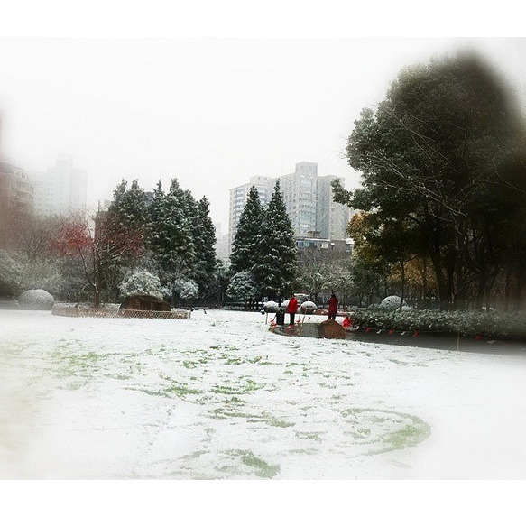
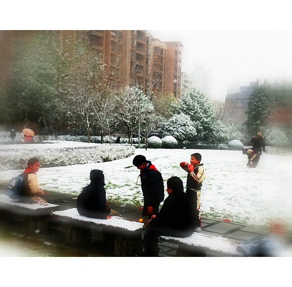
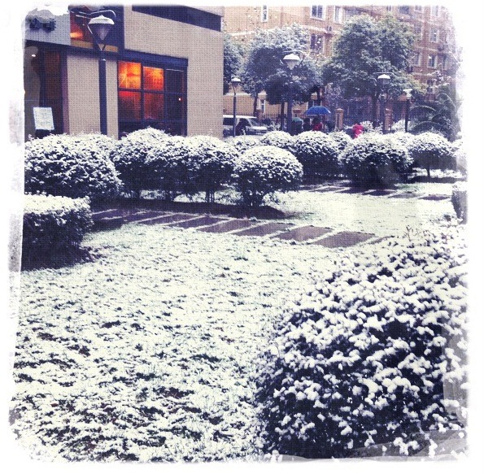
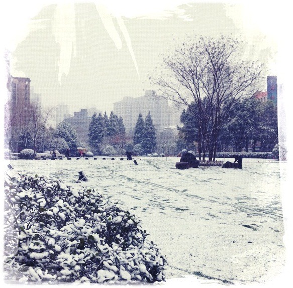

Thu, 16 Dec 2010 06:05:00 · Shanghai · China · Snow · Snowy · Photos
snowy shanghai the aussie in me hates winter




• Snowy Shanghai •
The Aussie in me hates winter. Then again, if it’s cold, might as well make it pretty, no? All these photographs were taken using my iPhone 4 until my fingers went numb.
–
These sets of photos also published on the Shanghaiist.com site, by the way.
^_^